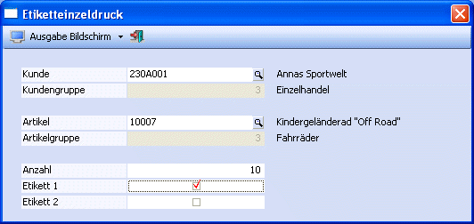

Im Menüpunkt
1 WinLine PPS
1 Auswertungen
1 Etiketteinzeldruck
kann unabhängig von den Produktionsaufträgen pro Kunde und Artikel ein Etikett gedruckt werden.

Ø Kunde
Eingabe des Kunden, für den das Etikett gedruckt werden soll. Durch Drücken der F9-Taste kann nach allen Kunden gesucht werden. Wird ein Kunde übernommen, dann wird neben dem Eingabefeld der Name des Kunden angezeigt.
Ø Kundengruppe
Hier wird die Kundengruppe des ausgewählten Kunden angezeigt.
Ø Artikel
Eingabe des Artikels, für den das Etikett gedruckt werden soll. Durch Drücken der F9-Taste kann nach allen Artikeln gesucht werden. Wird ein Artikel übernommen, wird neben dem Eingabefeld die Bezeichnung des Artikels angezeigt.
Ø Artikelgruppe
Hier wird die beim Artikel hinterlegte Artikelgruppe angezeigt.
Ø Anzahl
Eingabe der Anzahl der Etiketten, die gedruckt werden sollen.
Ø Etikett
Auswahl ob das Etikett 1 oder das Etikett 2 gedruckt werden soll.
Buttons
Ø ENDE-Button
Durch Drücken der ESC-Taste wird das Fenster geschlossen, es erfolgt keine Ausgabe.
Ø Drucken-Button
Durch Anklicken der Auswahllistbox kann entschieden werden, ob die Ausgabe auf dem Drucker oder auf den Bildschirm erfolgen soll.